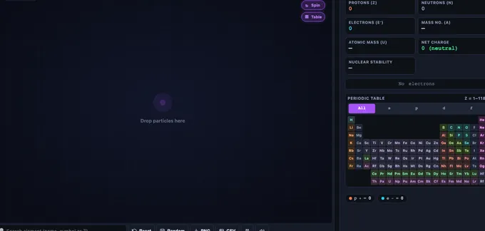

Build Your Atom
Drag protons, neutrons & electrons to construct any of 118 elements — live Bohr model, periodic-table match, isotope & ion logic
Display Controls
⚙ Element Properties — ionization, radius, electronegativity, common ions, uses
☢ Isotope & Stability — N/Z ratio, half-life region, decay mode
⌨ Keyboard Shortcuts — build atoms with the keyboard
- P add proton · Shift+P remove proton
- N add neutron · Shift+N remove neutron
- E add electron · Shift+E remove electron
- R reset atom · F freeze toggle
- O orbit on/off · S electron spin · T shell table
- / jump to element search
- Esc close menus / cancel input
User Guide — Build Your Atom
1 Overview
Build Your Atom is an interactive Bohr-model simulator covering all 118 elements. You drag (or tap +) protons, neutrons and electrons into the atom canvas. The live info panel identifies the element, calculates mass number and net charge, highlights the matching cell in a mini periodic table, and tells you whether the nucleus is stable or radioactive. Four modes are available: Build, Explore, Practice, and Quiz.
2 Build Mode
- Add particles: drag a particle from any bin into the atom canvas, or tap the + / − buttons. Protons fly into the orange-rim nucleus, neutrons fall in as grey balls, electrons snap into the next available Bohr shell.
- New shells appear automatically: electrons follow the real Aufbau filling order (1s, 2s, 2p, 3s, 3p, 4s, 3d …); whenever the next electron belongs to a higher shell, a fresh outer ring fades in and the electron orbits there.
- Live element identity: the right panel shows symbol, name, atomic number Z, mass number A, isotope notation (e.g. 2311Na⁺), net charge and stability.
- Click the periodic table on the right to load any element in its neutral, most-stable form — perfect as a starting point you can then ionise or isotope-ify.
- Touch-friendly: drag works the same on iPad — the simulator uses pointer events with touch-action: none, so no scroll glitches.
- Right-click the canvas for Save Image, Copy Atom Data, and Reset. The Export button does the same.
3 Reading the Info Panel
- Element card: big symbol, full name, category, plus the isotope/ion notation. If no proton has been added the card stays dashed and shows "No nucleus".
- Stats grid: proton / neutron / electron counts, mass number A, net charge with type (neutral, cation, anion), and nuclear stability.
- Electron configuration: the shells row shows the comma-separated occupancy of every Bohr shell (e.g.
2, 8, 1for sodium). - Mini periodic table: 18-column standard layout with lanthanides & actinides shown beneath; the matched cell pulses violet.
4 Explore Mode
Four tabbed categories of concept cards: Atomic Basics (what an atom is, Z, A), Particles & Ions (protons, neutrons, electrons, ions), Shells & Configuration (2n² rule, filling order, valence, noble-gas inertness), and Periodic Table (rows = shells, groups = valence count, categories, stability).
5 Practice Mode
Practice gives you a target element name and challenges you to build it. Pick a goal:
- Neutral atom — protons = electrons, neutrons in the stable isotope range.
- Stable isotope — right element, any electron count, neutrons must be stable.
- Ion — right element, but electrons must differ from protons (charge ≠ 0).
The simulator checks your atom continuously and gives a green tick as soon as the goal is met. Click Next target for a fresh challenge, or Show me to auto-load the answer.
6 Quiz Mode
5 randomised multiple-choice questions drawn from a 10-question bank covering atomic structure, isotopes, ions, mass & charge, electron shells and periodic-table reading. Each answer shows a detailed explanation. The result screen awards 1–5 stars based on your score.
7 Tips & Common Pitfalls
- Element identity comes from protons only. Changing electrons gives an ion, not a different element.
- Changing neutrons gives an isotope — same element, different mass.
- For light elements, stable N ≈ Z. For heavy elements you need more neutrons (e.g. 208Pb has 82 p, 126 n).
- Elements Tc (Z=43), Pm (Z=61) and everything from Bi (Z=83) onward are always radioactive — no stable isotope exists (Bi-209's ultra-slow alpha decay was detected in 2003).
- Shell occupancies shown are the real ground-state configurations (Aufbau order with s, p, d, f sub-shells, including exceptions like Cr and Cu) — iron reads 2, 8, 14, 2, matching every standard chemistry reference.
Free Online Build Your Atom Simulator — Bohr Model Across 118 Elements

Build any element from hydrogen to oganesson by dragging protons, neutrons and electrons into a live Bohr-model canvas. The simulator identifies the element, computes mass number and net charge, and marks the nucleus stable or radioactive in real time.
What Are the Properties of Protons, Neutrons and Electrons?
| Particle | Charge | Relative Mass | Location | Role |
|---|---|---|---|---|
| Proton (p⁺) | +1 | 1 u | Nucleus | Defines the element (Z) |
| Neutron (n⁰) | 0 | 1 u | Nucleus | Defines the isotope (A − Z) |
| Electron (e⁻) | −1 | 1/1836 u | Shells (n = 1, 2, 3…) | Defines the ion charge & chemistry |
What Is an Atom?
An atom has two regions: a tiny dense nucleus containing positive protons and electrically neutral neutrons, and a much larger surrounding cloud of negative electrons arranged in shells. The number of protons (the atomic number, Z) defines what element it is. The total of protons plus neutrons (the mass number, A) defines which isotope it is. The balance between protons and electrons defines its charge: equal numbers give a neutral atom; fewer electrons gives a positive ion (cation), more electrons gives a negative ion (anion).
How Does the Build Your Atom Simulator Work?
Three bins at the bottom of the canvas hold an infinite supply of protons, neutrons and electrons. You can either tap the + button or physically drag a particle from a bin onto the atom canvas. Protons fly to the nucleus and lock into a packed cluster with the neutrons, while electrons snap into the next available Bohr shell. When a shell reaches its capacity (2 in n=1, 8 in n=2, and so on), a fresh outer ring fades in automatically. The right-hand info panel constantly updates with the element symbol, name, category, isotope notation, electron configuration, and a live nuclear-stability badge. The mini periodic table beside it lights up the cell that matches the current proton count — the brighter, pulsing violet square shows exactly which element you have built.
What Do Protons, Neutrons and Electrons Each Do?
The three subatomic particles have very different jobs. Protons carry a +1 charge and define the element — one proton is hydrogen, six is carbon, seventy-nine is gold. Neutrons have no charge but stabilise the nucleus by adding strong-force attraction without adding electrostatic repulsion. Changing the neutron count produces an isotope (same element, different mass). Electrons are 1836 times lighter than nucleons, carry a −1 charge, and live in quantised shells. Their numbers determine chemistry: gaining or losing an electron creates an ion; the outermost shell electrons (valence electrons) decide how the atom bonds.
Why Do New Electron Shells Appear? — The 2n² Rule
The maximum number of electrons in shell n is given by 2n²: 2 electrons in shell 1, 8 in shell 2, 18 in shell 3, 32 in shell 4. Because s, p, d and f sub-shells overlap in energy, shells beyond calcium do not fill straight to their maximum — electrons follow the Aufbau order (1s, 2s, 2p, 3s, 3p, 4s, 3d …). The simulator renders the true ground-state occupancy for every electron count, including the classic exceptions (chromium 2, 8, 13, 1 and copper 2, 8, 18, 1): potassium shows 2, 8, 8, 1, then scandium through zinc refill shell 3 up to 18, so iron correctly reads 2, 8, 14, 2. When the next electron belongs to a higher shell, the simulator animates a brand-new outer ring into existence and places the electron there.
Isotopes & Stability — When Is a Nucleus Stable?
Every element has a "valley of stability" — a range of neutron counts that keeps the nucleus together. For light elements the stable region is around N ≈ Z (carbon-12 has 6 protons and 6 neutrons), but heavier nuclei need progressively more neutrons (lead-208 has 82 protons and 126 neutrons). The simulator stores the explicit list of known stable isotopes for every element; only an exact match reads STABLE in green — famous long-lived radioisotopes such as potassium-40, rubidium-87 and uranium-238 are correctly marked UNSTABLE in red. Technetium (Z=43), promethium (Z=61), and everything from bismuth (Z=83) upward have no stable isotopes at all — bismuth-209 was long taught as stable until its alpha decay (half-life 2×1019 years) was detected in 2003.
How Do Ions Form? — Cations and Anions
An ion is an atom with unequal protons and electrons. Build a neutral sodium atom (11 p, 11 e, 12 n) then remove one electron from the Electrons bin: the atom becomes Na⁺, a sodium cation. Build a neutral oxygen atom (8 p, 8 e, 8 n) then add two extra electrons and you get the oxide ion O2−. The net-charge readout in the info panel updates in real time and the isotope notation appends the correct superscript (e.g. 2311Na⁺). Practice mode includes an Ion challenge where you must intentionally build an ionic form of the target element.
How Do the Practice and Quiz Modes Work?
Practice mode picks a random element from a school-friendly pool of common elements (H, He, Li, Be, … up to Kr plus a handful of heavyweights like Ag, I, Au, Pb, U) and challenges you to build it as a neutral atom, a stable isotope, or any ion of that element. The simulator checks your atom continuously and awards a tick as soon as the goal conditions are met. Quiz mode draws five randomised multiple-choice questions from a 10-question bank covering atomic number, mass number, ion formation, isotope identification, shell capacity, noble-gas inertness, and reading the periodic table. Each answer shows an explanation, and the result screen awards 1–5 stars.
How Do You Read the Periodic Table? — Rows, Groups, Categories
The mini periodic table on the right uses the standard 18-column layout with the lanthanide and actinide series shown beneath the main block. The row number (1–7) equals the highest occupied electron shell — period 2 elements have two shells, period 6 elements have six. The column (group) tells you the number of valence electrons for s- and p-block elements. Cells are colour-coded by category: alkali metals (gold), alkaline-earth metals, transition metals, post-transition metals, metalloids, reactive non-metals (teal), halogens, noble gases (violet), lanthanides and actinides — matching the colour scheme used throughout science textbooks.
Who Uses This Atom-Builder Simulator?
Middle-school students learning about atoms for the first time use it to see protons, neutrons and electrons in action without abstract textbook diagrams. GCSE, A-Level, AP and IB Chemistry students use it to revise atomic number, mass number, isotopes, electron configuration, and ion formation. Chemistry teachers project it onto a whiteboard to demonstrate live what happens when you add or remove an electron from sodium, or what makes uranium-238 unstable. TVET / BTEC science learners use the Practice and Quiz modes as a no-equipment lab activity. The tool is touch-friendly on iPads and Chromebooks, so it works as well in a classroom as on a student's own device at home.
Explore Related Simulators
Once you have mastered atomic structure, deepen your chemistry and physics with other free NHIT VisualLab tools. Build molecules and bonds with the Chemical Bonds Simulator (ionic vs covalent across 37 elements and 21 compounds), then write and balance chemical equations with the interactive Balancing Chemical Equations Simulator. Mix acids and bases with the Litmus Paper Test Virtual Lab and explore acid-base chemistry with the Mix Acids and Bases Virtual Chemistry Lab and the Titration Simulator. Move from atoms to gas behaviour with the Boyle’s Law Simulator, Charles’ Law Simulator, and Ideal Gas Law Simulator. Or trace bending light through lenses with the Ray Optics Simulator & Trainer. All tools are free, browser-based, and require no signup.